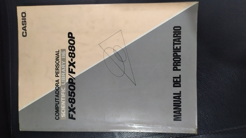

CALCULADORA CASIO FX-880P
Es probable que los mas jóvenes (Menos de 30 años) no conozcan esta pieza de Ingeniería
pero podemos decir que fue la CALCULADORA/ORDENADOR más popular en los 90 en
las carreras de ingeniería hasta que otros modelos de CASIO y
las HP (calculadora que también nombro en esta sito web) empezaron a ganar terreno a principios de los 2000,
aún hoy sigue siendo muy buscada por los estudiantes de ingeniería
y amantes de este tipo de ordenadores portatiles.
Características:
- Apareció en : 1991 y dejó de fabricarse en 1992
- 32KB ampliable a 64KB
- ROM : 32KB
- Teclado : qwerty
- Numero de teclas : 78
- Pantalla tipo : LCD
- Resolución pantalla : 32 columnas x 2 Filas
- Graficos : NO
- Programación : BASIC con 10 memorias de programa.
- Entradas /Salidas : 1 Puerto serie/paralelo
- Puerto Expansión : 1 para memoria de hasta 32Kb
- Microprocesador : Hitachi HD62002A03
- Tamaño : (largo x ancho x grosor) 193 x 78 x 11
- Peso : 200gr con pilas
- Baterías : 2xCR2032 + CR1220 (3V)
- Hecha en Japón

Conservo un manual original en Español el cual venía con la calculadora cuando la adquirias en tienda.
Este manual tiene 420 paginas
El Indice consta de las siguientes partes:
Parte 1: Configuración de la Unidad.
Parte 2: Operación Fundamental
Parte 3: Función de Calculo.
Parte 4: Función de Almacenamientos de Fórmulas
Parte 5: Función de Banco de datos
Parte 6: Programación en BASIC
Parte 7: Dispositivos Periféricos
Parte 8: Compatibilidad con la Serie PB-100
Parte 9: Principios del manejo de archivo
Parte 10: Referencia de Comandos
Parte 11: Biblioteca Científica
Parte 12: Anexos